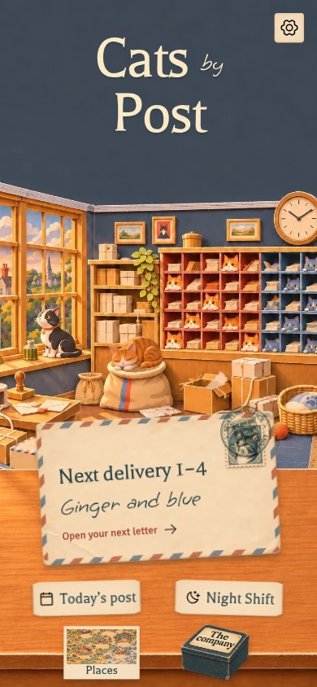
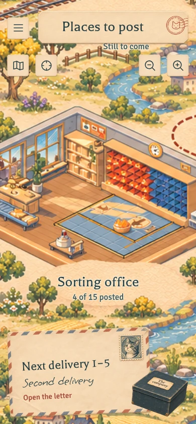
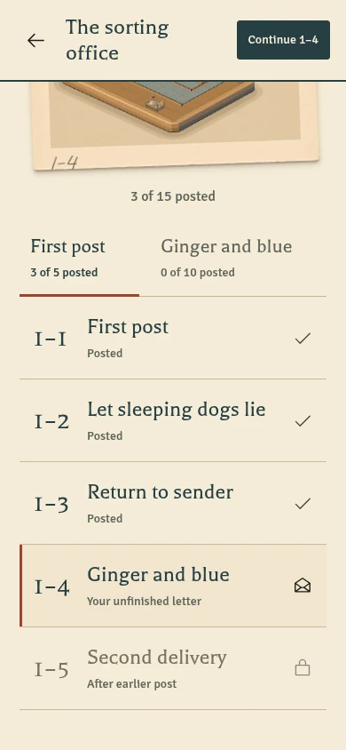
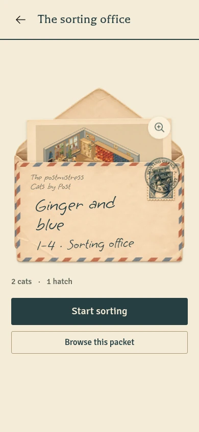
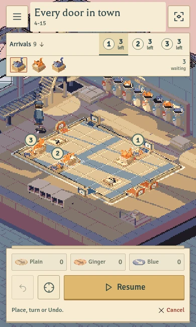
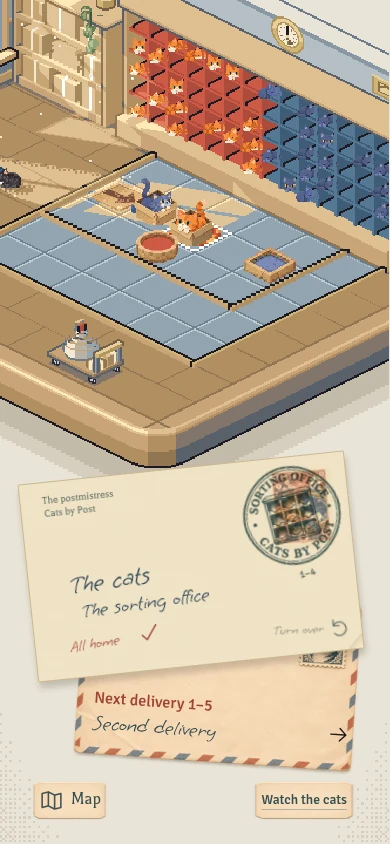
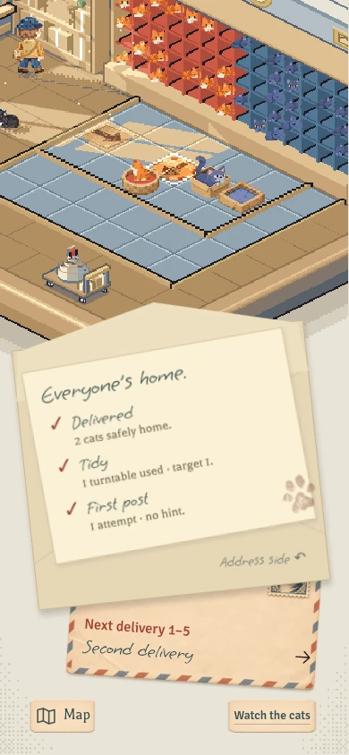
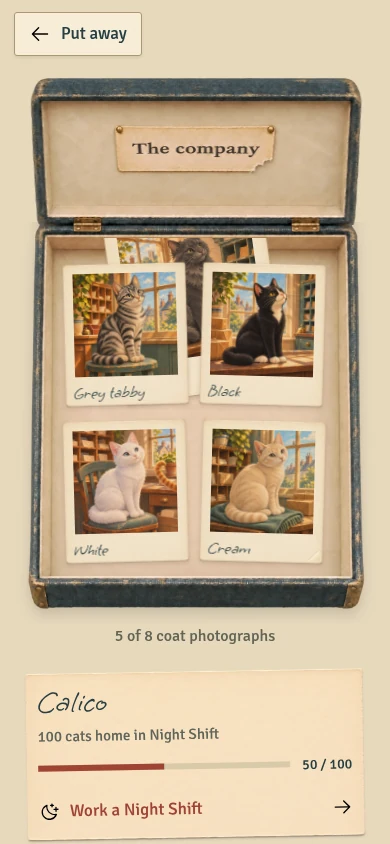
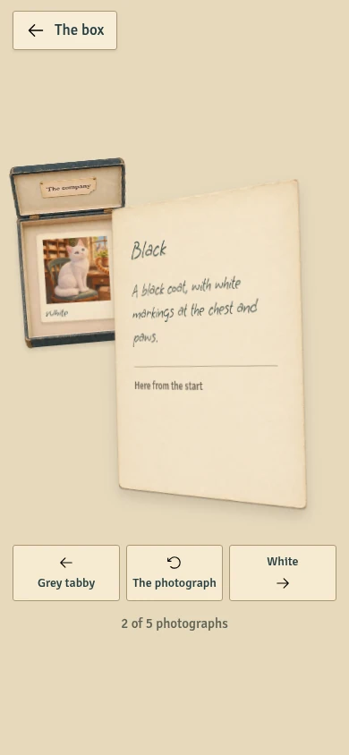

Keep the character. Keep the boundaries.
Ready to carry forward
The papercraft office, expanding map, chapter packets, emerging level print, precision Pause, correspondence results, photograph box and material-specific movement. Their behaviour is documented; their components remain independently editable.
Finish with the remaster
Final room photographs and map landmarks, late-game HUD qualification, chapter/finale timing, production save compatibility and physical-device performance. The current prototype embeds 40 playable levels; the pinned campaign index describes 100.
The contract in this pack is a proposal to agree with campaign and fidelity. A saved win, settled cats and permission to advance are separate facts. Nothing here swaps an engine, changes progress or approves a migration.
The accepted journey
Office → letter → setup ⇄ play / precision Pause → delivered correspondence → next letter or Map
Places contain packets; packets contain letters. The board stays available during tactical Pause. A photograph is lifted, held, turned, placed on a viewed pile and filed back into its case.


The accepted papercraft entrance; current envelope, services, places and photograph case.


One expandable world map; the next letter floats above it, with no blank strip underneath.


Posted, unfinished and locked rows keep the same internal alignment.


The real starting-arrangement photograph rises from its envelope.


The paused board remains visible and editable; Resume and Cancel stay available.


Applied postage and a place-specific cancellation, with the next envelope underneath.


Reward facts belong inside the letter; one observed paw trace crosses the paper edge.


A real case, filed coat prints and a tucked arrival; the label belongs inside the lid.


The same print turns in depth while controls and the physical source box stay in place.
Screen states, returns and reusable components
Screens, state and reusable components
These behaviours are accepted prototype references. Native implementations should reproduce their purpose and object handling without reproducing browser frame/DOM structure.
Journey
Office → current envelope → selected letter → setup → running ↔ tactical Pause → settled delivery correspondence → next envelope or Map. Menu is an explicit interruption; it is separate from tactical Pause. Map → place → chapter packet → letter provides a direct route to any available delivery. The photograph box and services return to their recorded origin.
| Surface | Required states and actions | Return / persistence |
|---|---|---|
| Office/main menu | First letter; next ready; unfinished arrangement; resumable service; all currently posted. Main envelope is the primary action. Places, Today’s post, Night Shift, box and Settings remain distinct. | Main menu saves/suspends the current route. Returning resumes the same arrangement. Prototype-only study switcher is not product UI. |
| Places map | Current place, reached/unreached destinations, pan/zoom, direct place index, Home/current place, next/continue envelope and box. Place labels remain readable during camera movement. | Retain camera on same-place return. A genuine destination change recentres while retaining intended zoom. Extents can grow. |
| Chapter packet | Destination print, place progress, chapter tabs, posted/current/available/locked letters; direct Continue. Six places contain eight packets; 100 deliveries stay in lists. | Selecting/previewing another letter does not silently replace the active route. Return to same place/packet/scroll context. |
| Letter invitation | An actual level photograph emerges from an addressed envelope. View photograph, start/open letter, browse packet. Title, level reference and concise puzzle facts remain live text. | Photograph inspection returns to the same letter. Starting a different unfinished route requires explicit game-owned replacement behaviour. |
| Setup | Stock/selection, Undo availability, hatch previews, camera, precise placement, Menu and Send. | Opening queues or precise placement keeps the board available. Store arrangement through approved engine session API. |
| Running | Current/next arrivals, remaining per hatch, home count, zero stock chips, stable Pause and Cancel. Story preserves hatch-local order; Night Shift shows global order. | A manual camera stays steady when stock collapses or Pause changes to Resume. |
| Tactical Pause | Visible editable board; stopped simulation; Resume in same place. Placement/rotation/Undo remain subject to game locks at the current rule instant. | No automatic resume after inspecting arrivals. Menu close restores prior pause state unless background/system interruption requires a paused return. |
| Delivery complete | Addressed delivered envelope; earned stamps; destination cancellation; reverse note with concrete award details; next envelope, Map and Watch the cats. Replays do not move the journey backwards. | Wait for campaign permission to show/advance. Watch returns to finished room. Preserve actual chapter/finale ownership. |
| Photograph box | Loading/error, open case, filed coat slots, tucked new arrival, held print front/reverse, persistent viewed pile, filed return and closing. | Selecting/turning cancels a queued departure. Retain accepted progress arriving during a cancelled close. Restore originating control/focus. |
| Today’s post / Night Shift / Practice | Their existing game-owned selection/setup/run/result/tea/break states and real mode-specific continuation. | A service’s Next stays in its service. Main menu and Map exits preserve the appropriate game session. |
| Menus/settings/help | Useful current-route ticket, routes and utilities, readable Night Shift hover state, typography/contrast/reduced motion, help and precise placement entry. | Modal Menu suspends play; it does not redefine tactical Pause. Settings need whole-interface propagation in the port. |
| Ending/credits | Campaign settlement → chapter/finale presentation → thank-you/Alex Holley credit → clear replay/postgame choices. | This surface remains to be finished against campaign lifecycle; the old lab does not prove it. |
Component inventory
| Component | Independent presentation state | Reference source |
|---|---|---|
| Office composition / CurrentEnvelope | Visit/current route, material geometry, accessible action names | start.html, start.css, start.js |
| MapSurface / PlaceLabel / CorrespondenceDock | Camera and selected place, projected progress read-only | journey.js, map-surface.css |
| PacketHeader / ChapterTabs / DeliveryRow | Posted/current/locked state; fixed columns and reserved selection rail | menu-system.css, journey.js |
| LetterPocket / LevelPrint / PrintInspection | Front/flap/photo layers and inspection origin | letter-insert.css, paper-motion.js |
| ArrivalLane / HatchKey / ArrivalTabs | Expanded/active hatch; queue data remains game-owned | play/hud-model.js, play/hud.js, play/hud.css |
| StockTray / RunControls / PrecisionTools | Selection, expanded precision, layout insets; command eligibility from game | play/hud.js, play/app.js |
| DeliveryCorrespondence / EarnedPostage / NextEnvelope | Front/reverse, selected award note, destination identity | play/completion.js, play/completion.css |
| PhotographCase / HeldPrint / ViewedPile | Coat identity, face, physical file/pile membership; progress read-only | company-box.js, photo-handling.js, company-model.js |
| PostalIdentity | Place art and read-only chapter ownership | postal-identity.js/css |
| MenuRow / ServiceCard / PreferenceRow | Focus, press, disabled, selection and useful text | menu-system.css |
| OfficeGinger | Finite pose/replay, cover registration and visible/reduced lifecycle | office-cat.js, start.css |
Use stable identities for level, coat, held print and pile members. A view update must not replace a photograph just to turn it. Rendering a reusable component must never award a stamp, unlock a coat, mutate saved progress or start a simulation.
Responsive composition
Phone: scene fills the available safe area; HUD above/below the board; letter/packet can occupy the view; photograph box becomes a physical source miniature beside the held print. Wider compact/tablet: reveal the map beside the letter/packet when content fits. Play always keeps one clear board, with a side rail for wide/short layouts. Desktop uses real hover/focus states, keyboard routes and a readable wider spread.
Prototype thresholds are references: map spread 740 CSS px; larger map pane 440px from 1100px; HUD rail from 1000px or 500px with height ≤600px. CSS has additional rail styling at 650px; the port must derive insets from measured controls rather than copying every override. Compact hatch tabs appear at height ≤450px or width ≤650px and height ≤650px. The box uses two columns from 740px unless short landscape needs the single table. These are content breakpoints, not device identity tests. Mini/Duo means a compact larger viewport here; no unannounced hardware dimensions or hinge assumptions are fixed.
A small, deliberate visual system
Postal paper, dark ink, restrained rust and live lettering. Material perspective carries the writing with the object. Menu rows keep the same internal columns in every state. No eyebrow headers.
#F5ECD7#273F43#9F4434#C8B99ADoors of their own
Pause, place a turntable, and send the post.
Ginger and blue
Balthazar · Signika · Grape Nuts. Handwriting is a correspondence material, not a small numerical counter.
| File | PostScript name | OS/2 weight | Role |
|---|---|---|---|
| balthazar.ttf | Balthazar-Regular | 400 | primary-font |
| della.ttf | DellaRespira-Regular | 500 | optional-font |
| grenze.ttf | Grenze-Regular | 600 | optional-font |
| post-hand.ttf | GrapeNuts-Regular | 400 | primary-font |
| signika.ttf | Signika-Light | 500 | primary-font |
Font names and weights do not always agree. Signika registers as Light with weight 500; Grenze registers as Regular with weight 600. Import the exact files and compare native text before choosing additional weights.
Reference tokens JSON · Font notices · Grape Nuts notice
Colour, spacing, typography, material geometry and responsive rules
Visual system and materials
The interface is a coherent set of postal objects placed in a room. Keep illustration and typography together on their material plane. A box label belongs to its lid; a cancellation belongs to postage; a photograph has a paper mount, a stiff face and a reverse. Utility menus can be quieter while retaining the same lettering, ink and precise spacing. No eyebrow headers, generic dashboard cards, redundant headings or decorative copy without a job.
Reference tokens
tokens.json preserves separate existing map, play, office and menu scopes. Their small colour differences are intentional source facts; they are not silently collapsed into a new theme. Native semantic names can reference these values while future palette reconciliation remains explicit.
| Role | Existing value / behaviour |
|---|---|
| Map paper / ink / rust | #F5ECD7 / #273F43 / #9F4434 |
| Play paper / ink / rust | #F7EED9 / #283D44 / #A63F32 |
| Office title / address ink | #F9E9C5 / #294449 |
| Menu wash / rule / focus | #EEE2C7 / #C8B99A / #A14433 |
| Default menu inset / gap | 16/14 CSS px;14/12 at width ≤360px |
| Navigation row | 32px icon + flexible text +20px trailing column; minimum 72px height |
| Delivery row | 46px number + flexible title +22px state; minimum 92px; number 40px at compact widths |
| Place index | 72px art + flexible text +20px trailing; art 56px compact; minimum 100px height |
| Interaction target | At least 44 CSS px in reference; native at least 44points; larger text may increase rows |
| Selection | Reserved 3px rail/underline; it must not alter number/title alignment |
Fonts and native registration
All five shipped font files are included unchanged with their OFL notices. Primary: Balthazar display, Signika controls/body, Grape Nuts handwriting. Della Respira and Grenze are selectable prototype display alternatives, not new canonical directions. Values below were read from each actual TTF name table.
| File / browser alias | Actual PostScript name | Porting detail |
|---|---|---|
balthazar.ttf / Balthazar | Balthazar-Regular | Static Regular; headings and postal display |
signika.ttf / Signika | Signika-Light | Static file with a naming/weight mismatch: family/PostScript says Light, but OS/2 weight is500. Use the recorded face, compare native rendering, and do not assume a separately bundled 600/Semibold exists. |
post-hand.ttf / PostHand | GrapeNuts-Regular | Grape Nuts Regular, Latin subset. Register the real name; PostHand is a CSS alias. Keep navigation/scoring information available in accessible text. |
della.ttf / Della | DellaRespira-Regular | Static face named Regular, OS/2 weight 500; optional display preference |
grenze.ttf / Grenze | Grenze-Regular | Static face named Regular, OS/2 weight 600; CSS also requests600. Register this exact file rather than guessing Grenze-Semibold. |
Use text roles and Dynamic Type relative scaling, then compare actual wraps against references. Handwriting is for correspondence, not small numerical counters. Hatch IDs/counts use Signika, lining/tabular figures, with a clear distinction between hatch number and waiting count. Keep titles/addresses as real text, not baked into a new illustration. Engraved postmarks and the approved case label are intentional artwork; supply accessible names alongside them. Font files cover the current English prototype; broader language coverage needs qualification.
Asset geometry
Keep delivered file dimensions/alpha from assets.json. Do not crop transparent margins without updating anchors. Decode colours/alpha consistently and preserve fine paper edges. WebP is the reference delivery format, not a mandate for native texture storage. Convert/import into the native asset pipeline with explicit scale, colour space, premultiplication, decode memory and mip/atlas choices owned with fidelity. Do not copy the legacy renderer's palette constraints into UI artwork without an agreed requirement.
Photograph mount aspect 1090/1244. Its square photo window is left 9.54%, top 7.88%, width 80.73%; name stays on the lower mount. Open case uses the 1007/1561 layout ratio, well left 10.92%, right 11.52%, top 33.95%, bottom 8.84%. The chewed export is 1000×1550; preserve the established proportional layout. Hinge line is 29.1% of full case height; lid plane 67%, origin bottom-centre, top−37.9%, open 62.5°, closed 180°. Inner texture is the top 28.5% of the case art. Base and brass hardware remain stationary. These are prototype geometry, not final native lighting/thickness specifications.
Postage sheet: 1774×887. Delivered/Tidy/First post source view boxes are [20,70,576,752], [600,70,578,752], [1180,70,576,752]. Keep original source pixels; do not redraw a generic rectangle stamp. Note/paw and trolley additions are rare1–4 observations, not repeated branding. White's portrait uses observations/white-tail.webp; the original White file is superseded in active display.
The office uses wide 1536×1024 or portrait 1024×1536 clean plates and a separate 2048×1024 ginger atlas, 4 columns × 2 rows of 512px. Source anchors: wide(730,548), portrait(489,829), frame size 200 source pixels, sprite anchor(340/512,390/512). Apply the same centred cover transform as the background. The cat is the only moving layer there; printed coat portraits stay still.
Accessibility and finishing
Names must express action/status without relying on colour, handwriting or animation. Announce queue changes selectively; do not read every simulation tick. Trap focus only in actual modal menus, restore origin when closing, and respect keyboard/pointer/controller changes. Larger text, high contrast and reduced motion must propagate across office/map/box as well as play; the current prototype does not prove consistent whole-app preferences. Every object needs idle/hover/focus/pressed/disabled/loading/interrupted checks: the ginger bug came from a shared hover background shorthand erasing its sprite image.
Each material has its own movement
Paper and ink
Paper slides with a little drag and flex. Postage presses down. Ink arrives at contact; it does not float or bounce through space.
Photographs
A print takes its weight before lifting. Its turn is stiff and deliberate. The same physical print and remembered reverse move between file, hand and viewed pile.
The case
The well and brass hardware stay put. Separate inside and outside lid faces rotate around the actual hinge. A new handling action cancels a queued departure safely.
The ginger
Eight drawn poses stretch, hesitate and settle over 1.56 seconds. Replay is intentional; there is no endless idle loop or movement in printed portraits.
Exact timings and source references
Gesture timings, anchor geometry, cancellation and reduced motion
Material motion and interruption
motion.json records the current prototype values and source files. Treat them as the accepted reference rhythm, with native projection/lighting to be qualified against the remaster. UI animations never advance rules, award progress or decide when a campaign scene is finished.
| Material / gesture | Current reference | Reduced motion / interruption |
|---|---|---|
| Envelope flap | 310ms;178°→−3° at87%→0°, pivot at flap crease | Set the usable open pose immediately |
| Envelope front | 390ms; skewX−0.7°→+0.4° at65%→0° | Keep addressed text on the paper plane; no flex when reduced |
| Invitation photograph | Delay 140ms +410ms; slide from pocket 86% to 0%, rotation 1°→−3°; no skew | Photograph remains rigid and inspectable |
| Photograph lift | 390ms; first 18% takes weight/lifts 9 CSS px in the reference viewport while retaining source thumbnail scale, then transports to held size | Do not create a second interactive copy |
| Place previous print | 310ms to the measured viewed pile; shadow lowers at contact | Retain coat identity/face; remove temporary departure copy |
| Draw next print | Delay 85ms +330ms from its actual source/pile | Deep-pile retrieval must not appear to come from the box |
| Turn photograph | 440ms, cubic(.35,.08,.28,1), rigid rotateY0°↔180° | Keep the same print object and active accessible face; do not bend it |
| File photographs | 290ms to a visible slot; gather held print and viewed pile | Reveal target slot before return; clean up clones on interruption |
| New arrival | 260ms;−9px/−12°→0px/−8° | Arrival status is presentation-only; inspecting it cannot change collection progress |
| Case open | 520ms;180°→75° at73%→62.5°, bottom-centre hinge | Resume from elapsed time when progress loads; early selection remains available |
| Case close / cancel close | 300ms to 180°; cancelled departure returns toward open in 180ms | Latest handling invalidates queued dismissal/service callback and clears retained closing transforms |
| Delivered envelope | 460ms;22px/28px slide and small flex to rest | Only physical letter moves; controls remain reachable |
| Applied postage paper | 280ms; lift 11px and slight skew at contact, no spring | Stamp start delays 310/430/540ms relative to result entry |
| Cancellation ink | Delay 850ms +80ms; opacity at contact, no translation/scale | Final ink appears immediately when reduced |
| Delivered envelope turn | 650ms, cubic(.2,.7,.2,1), rotateY0°↔180° | Preserve full note-paper bounds through the outgoing face |
| Note flex | Delay 140ms +310ms;12px slide/skew−0.8°→+0.35°→rest | Controls remain outside the paper; finish before another turn |
| HUD state feedback | 180ms on real count/next/home changes | Stop during tactical Pause, frozen state or reduced motion; no endless pulse |
| Office ginger | Finite1560ms, eight drawn poses; no perpetual idle loop | Tap replays; hidden/covered scene and reduced motion settle/rest and stop work |
Most PaperMotion gestures use cubic(.2,.75,.25,1); lift uses(.25,.55,.25,1); lid open(.25,.55,.3,1); close(.4,.12,.65,1). Exact existing values are in JSON and source, including individual keyframe offsets.
Cat timeline and source registration
Poses:0ms rest0;120ms wake1;260ms reach2;380ms stretch3;650–1050ms hesitate4;1050ms draw back5;1210ms curl6;1380ms settle7;1560ms rest0 and stop. These are drawn atlas poses, not a scale animation of a whole illustration. No named character/unlock is introduced.
Let s=max(viewWidth/sourceWidth, viewHeight/sourceHeight). Centre crop offsets are (viewWidth−sourceWidth*s)/2 and (viewHeight−sourceHeight*s)/2. Sprite frame width is200*s; position so its anchor(340/512,390/512) lands at the wide or portrait sack source contact from visual-system.md. Background and sprite must share the exact cover transform. A viewport resize may select the other source plate; no duplicate baked cat may remain underneath.
General interaction rules
- Own gesture lifetimes by object and navigation generation. A completed animation from an older visit must not close/reopen a newer screen or start Night Shift.
- On a new intent, measure the current pose, invalidate old completion callbacks, clear retained transforms, then move toward the new valid pose. Finish/cancel temporary copies without losing filed/held/pile membership.
- Accept a still-current progress response even while the case is closing; defer its render if necessary. A cancelled departure must leave that loaded progress usable. Stale requests from an earlier visit must be ignored.
- Invisible scenes do no animation work. App backgrounding freezes the game via its lifecycle API and cancels/suspends UI gestures. Returning exposes a valid resting interface and a visible paused board where appropriate.
- Combine system and user reduced-motion preferences. Respond to preference changes during gestures, rather than only checking at launch.
- Keep photographed cats still. Put observed humour in deliberately placed artwork: White's intruding tail, the chewed inside label, the 1–4 trolley occupant and one note-edge impression.
Native sound/haptics are a later coordinated finish. The web prototype has simple oscillator/vibration feedback and toggles; it does not contain a designed paper/photo/hinge/ink audio library. Do not infer sample assets or a native haptic pattern from these placeholders.
The materials, accounted for
112 reference assets and notices are inventoried with byte size, SHA-256, image dimensions/alpha or font metadata, role, status and bundle path. Current artwork, alternatives, superseded editions and remaster-dependent art are labelled separately.
The complete set of archives carries the delivered files. Original high-resolution PNGs have provenance locators and are outside these archives. WebP delivery size is not a GPU memory budget; native texture/colour/alpha decisions need the fidelity pipeline.
For the complete set, extract the guide bundle, then run python3 fetch-artwork.py inside that folder. It downloads and verifies the artwork, preserves modified files, and can be run again after an interruption. You can also extract these companions into the same folder:
Reference HTML is stored as text inside the ZIP. The old embedded engine and developer puzzle solutions are excluded. Generated artwork is not blanket-licensed by an icon/font software notice.
A game contract worth agreeing first
The game owns rules, awards, saves, collection and safe transitions. Fidelity owns projection, picking, scene art and rendering. The interface owns the presentation of that truth and the player’s navigation intent.
Simulation resolves
↓Game saves the outcome
↓Cats finish settling
↓Chapter / finale finishes its owned presentation
↓Game permits the result / next action
↓Interface presents correspondence and navigation
The old lab’s mode === 'won' polling is a prototype shortcut. The native port needs explicit permission and stale-command protection so Next cannot skip or freeze a later ending.
Ownership, proposed state/commands, lifecycle and persistence
Game ↔ interface contract
Status and ownership
This is a proposed contract to agree with campaign and fidelity, not APIs already implemented in the game. contract.schema.json and its examples describe a possible native presentation snapshot. Names and storage transport remain proposals. The accepted behavioural requirements below are the important boundary.
| Owner | Authority |
|---|---|
| Game/campaign | Rules, tile locks, arrivals/order/size/cadence, attempts/hints/stars, saved wins, unlocks/collection, session restoration, native home settlement, chapter/growth/finale controllers and safe advancement |
| Renderer/fidelity | World geometry, picking/projection, scene lighting, camera implementation, art/poses, texture/decode budgets and renderer clocks |
| Interface presentation | Navigation intent, current letter/packet/map camera memory, selected photograph/face/viewed pile/seen status, menus, typography, accessibility and material gestures |
| Host/lifecycle | Scene foreground/background, input focus, safe areas/window size, reduced motion, preference persistence and coordination of the above owners |
Use a separate UI module/bundle. A proposed native arrangement is SwiftUI presentation over the Metal scene host, with a small read-only observable snapshot and typed commands. The renderer/game must not reach into view layout; views must not copy raw gm, trace arrays or rules into themselves. Publish meaningful changes rather than rebuilding every view for every renderer frame. Each module keeps an independently editable implementation and tests.
What exists in the reference
The lab exposes Lab.state/load/pause/freeze/tap/undo/snapshot/restore through its adapter, PlayHUD renders arrivals/stock, JourneyHandoff.handle routes selected shell commands and JourneyModel.continuation projects navigation. CompanyModel.read derives coat availability from existing Night Shift totals. PostalIdentity derives place/chapter ownership. These are reference-only browser implementations, not native API requirements.
The old handoff polls mode==='won' every 200ms and can pause/leave on intercepted Next. It deliberately suppresses original chapter transitions. Do not port that lifecycle shortcut or blindly swap a new runtime into it: it could bypass/freeze a later chapter or finale. Its raw in-progress snapshots do not contain the later finale controller.
Proposed snapshot
Use an immutable snapshot with stable runID, revision, mode, phase, level, board, clock, arrivals, stock, counts, eligibility, lifecycle, progressRevision and collection. IDs are opaque identity, not display text. UI copies are never a second save authority.
arrivals: an explicit game-supplied per-hatch or global order; stable cat identity, hatch identity, local/global order, coat identifier, normal/large size, released/home status and optional release tick. Keep size and cadence visible without guessing from coat. The old HUD extension deliberately suppliesbig:false,size:1; its large-cat markup is not proof of native campaign data support.clock: current rule instant and actual simulation pause reason. UI material time is separate; precision Pause freezes puzzle time, not a renderer refresh needed for selection/inspection.eligibility:canEdit,canUndo,canSend,canCancelreflect authoritative rules. Menu and board must use the same result. A command may still be rejected if eligibility changed since the snapshot.lifecycle: unique outcome identity; saved-win and native-home-settlement facts; chapter/finale phase; permission to show result and advance. A successful simulation alone is insufficient. Recommended minimum for showing result is saved+settled+campaign permission. Recommended minimum for advancing is saved+settled+chapter/finale idle+campaign permission. The game may withhold permission for longer.collection: game-approved coat IDs/availability/progress. Prototype thresholds0/50/100/250/500 and coat naming must be checked against production; views do not invent unlocks or infer gameplay routing types from collection portrait names.
Proposed commands and acknowledgement
Each command carries commandID, runID, expectedRevision and its typed payload. The game returns accepted/rejected/superseded plus the authoritative revision and a useful reason. Duplicate command IDs are idempotent. Ignore stale replies from an older run/navigation generation.
| Intent | Required behaviour |
|---|---|
| Open/resume delivery or service | Preserve the current session until replacement is explicit and accepted; mode-specific continuation stays in that mode |
| Set tactical pause(boolean) | Idempotent; no overlay; no new send/attempt; retain board selection/camera |
| Place/rotate/remove / select stock | Pick logical tiles through renderer API; reject occupied/in-flight/locked tiles using game rules; never reverse-engineer isometric picking in a UI overlay |
| Undo | Same-rule-instant history only; correct attempts/hints/star accounting remains game-owned |
| Cancel run | Return to setup with arrangement retained; attempts already spent stay spent; safe cancellation of active movement belongs to game |
| Open/close Menu | Suspend via a reason/token and restore the prior tactical-pause state; background interruptions take precedence over an old resume token |
| Next/retry/replay/skip | Respect current lifecycle permission; campaign owns skipping/finishing a scene and restoration of input/light/camera; replays cannot duplicate awards |
| Main menu / Map / box / mode exit | Save/suspend through game API, record UI origin, detach/pause scene correctly, then navigate; reject or defer exits during protected campaign transitions as the game specifies |
| App interruption / reload | Use production session codec/version and policy; return to a valid paused route without recreating an old controller from lab traces |
| Camera fit/pan/zoom | Supply measured clear insets and intent to renderer; preserve manual view across control changes and viewport resize |
Completion sequence
Simulation resolves → game commits outcome idempotently → game finishes home animation → campaign chapter/finale runs if needed → game publishes permission → UI presents correspondence → player selects next/replay/map → game accepts transition → UI changes navigation. Permission may be revoked by a newer run; do not bind irreversible navigation to an animation completion alone.
Illustrative examples cover a paused busy delivery, a saved-but-unsettled win, a settled finale still owning presentation and an advance-ready result. They do not ship a puzzle solution, actual authored queues or a working native controller.
Metadata and persistence
Pinned safe index: 100 unique levels, chapter lengths 5/10/10/15/15/15/15/15. Preserve level IDs. Engine cityhall→journey hall; engine christmas→journey winter; other room IDs map directly. Use production titles/teaching/board facts, not the older UI placeholders. Extra destinations can extend the data and map extent.
Game progress remains authoritative. Preserve production catsByPost.progress v5 and independent review namespaces catsByPost.christmasLevelsPreview, catsByPost.interfaceLab.progress and cats-by-post.journey.*; do not reset/import them implicitly. UI navigation/seen/camera preferences can have a separate versioned store. Best-win compatibility does not prove raw session compatibility. Agree supported session versions, migration/error recovery and rollback before integration. Prototype example histories (three or 33 posted) and synthetic 50-cat collection study must never become production defaults.
Agreement still required
Campaign/remaster owners must agree the actual snapshot/command names, outcome identity/deduplication, safe result/advance permissions, skip/replay/exit policies and production save migration. This pack records requirements and a proposed shape; it does not claim those methods exist or approve a migration.
Build in an order that avoids rework
- Prepare the independent presentation. Register fonts and materials; build reusable components and native previews; agree the game boundary.
- Integrate against the accepted remaster. Use its real geometry, queue/lifecycle state and save policy; regenerate final photographs and landmark art.
- Qualify the complete experience. Exercise the real late campaign and ending, accessibility, app interruptions, physical devices, memory and frame pacing; tune sound and haptics together.
Web evidence is source-pinned. A responsive browser capture is useful reference, not a native or physical-device acceptance result.
Port sequence, acceptance scenarios and unresolved decisions
Port order, remaster gates and acceptance
Prepare now
- Register the existing fonts using real file names/PostScript names; import reference UI assets into an independent presentation bundle with source hashes and licence notices.
- Build reusable paper controls, menu rows, delivery rows, packet tabs, mounted prints and box layers in isolated native previews. Keep actual text, stable identities and scalable spacing. No game scene is needed to check those components.
- Implement a local presentation harness against clearly labelled snapshot fixtures; agree the contract with campaign/fidelity. The fixtures are not production state or proof that later gameplay works.
- Prepare whole-interface preferences, accessibility navigation and short teaching copy from the safe campaign index. Preserve rule ownership and existing title/coat decisions.
Wait for the accepted remaster integration target
- Record the accepted game/remaster commit and build; integrate engine and adapter together on an explicit integration branch. Confirm progress/session versions before any restore. No blind replacement of the 40-level runtime.
- Use actual scene picking, clear insets, sizes and lifecycle from that build. Qualify real late queues and four hatches. Regenerate level photographs from accepted starting arrangements. Replace provisional map landmarks and complete remaining destination identity art against actual places.
- Finish chapter/result/finale/thank-you/credits transitions with campaign permission. Credit Alex Holley; Santa remains parked. Then tune sound/haptics and final material lighting/motion together with fidelity.
- Run one integrated device qualification pass, with realistic texture/decode/peak memory, frame pacing, battery/thermal behaviour, background/resume and long-session checks. This pack invents no performance budget or device acceptance result.
Required acceptance scenarios
| Scenario | Expected result | Current evidence / native status |
|---|---|---|
| First visit → first letter → setup | Clear primary action, truthful puzzle facts; no prototype seeded progress | Web first-visit checks; native pending |
| Return to unfinished story/service | Exact arrangement and mode restored, paused visibly; preview does not replace it | Web main-menu/session checks; native codec qualification pending |
| Small phone / landscape / Mini / tablet / desktop | Readable board and controls; wrap/scroll without clipped actions,44pt targets; content-driven spread/rail | Web emulated size matrix; physical native devices pending |
| Pause → edit → inspect arrivals → Resume | Same rule instant; no attempt increment from pause/resume; locked tiles stay protected; close inspection stays paused | Web precision/HUD checks; current campaign rules pending |
| Cancel run → Send again | Arrangement retained; prior attempt remains spent; correct new attempt when actually sent | Web cancel checks; native accounting pending |
| Zero stock / exhausted hatch / hatch switch | Compact stock; hatch positions retained; stable camera/pointer target | Web HUD refinement checks; four-hatch campaign pending |
| Large cats and mixed cadence | Size/cadence come from game and are legible beside coat/order | Boundary unit coverage; real late-campaign integration pending |
| Delivery win → note → next envelope → Map | Actual current-attempt rewards, full note surface, correct next/resume route; camera return coherent | Web delivery/observed-art checks; production lifecycle pending |
| Replay / duplicate outcome / double Next | Best awards retained once; no backwards journey or duplicate rewards; stale commands rejected | Web continuation/handoff checks; proposed command protocol pending |
| Real 8–15 completion | Actual 32 cats/14 big, four hatches, points/tunnels/flaps; wait for home settlement and finale permission | Safe metadata only; integrated engine/renderer test pending |
| Skip/replay ending; reload around receipt | No duplicate rewards; input, lighting, camera and session ownership restored | Campaign cooperation required; not proven by UI lab |
| Exit ending to Daily / Night Shift / Main menu | Approved lifecycle exit with correct mode/origin; no frozen controller or skipped save | Native integration pending |
| Case close while loading / select / turn / queued Night | Latest handling wins; progress retained; no stale departure; real hinge returns usable | Web material-motion regression 37 checks; native pending |
| Touch / hover / focus / press on ginger | Artwork stays painted while poses run; no sprite loss from shared styles | Web real-input regression 11 checks; physical Safari/native pending |
| Long coat name / reverse / deep pile / all eight | Same print/face remembered; filed slots reflect unique actual membership; controls stay clear | Web photograph 58 checks; native pending |
| Larger text / high contrast / VoiceOver / keyboard | All surfaces respect prefs; useful action/status names and focus return; no colour-only information | Some web coverage; whole-app native propagation and assistive-device testing pending |
| Reduced motion toggled mid-gesture | Final valid pose immediately; no ghost copy or delayed navigation; no invisible animation loop | Web material and tap checks; native pending |
| App background / interruption / scene resize | Save through production API, stop invisible work, return valid and paused; preserve manual camera | Web restoration portions; native lifecycle pending |
| Storage/session invalid or version mismatch | Useful recovery; no silent progress reset; raw lab snapshot not imported | Web damaged-state checks; native migration policy pending |
| Rights/credits/source inventory | Real fonts/licences included; generated originals identifiable; creator credit correct; no solutions bundled | Pack inventory; final production credit review pending |
Prototype evidence is historical and source-pinned, not a native sign-off. Latest web suite: 54 Node tests; 37 material checks; 11 ginger paint/interactions; 58 photograph, 34 main menu, 51 delivery-state and 22 observed-art regressions at their recorded checkpoints. The pack itself gets file/hash/link/schema/archive and browser-guide checks. Physical Safari/iPhone/iPad and native VoiceOver/performance have not been qualified by this handoff.
Decisions to carry forward
- Exact native UI framework/module shape: SwiftUI over the scene host is a recommendation, not an existing implementation.
- Verify native font naming/weight metadata and broader glyph coverage; Dynamic Type wrapping and whole-app high contrast.
- Production texture formats/alpha/colour-space handling and budgets with fidelity; WebP byte size is not decoded GPU memory.
- Final map landmarks/level photographs/postmarks after accepted room art. Office/depot current impressions are references; train impression is concept art; hall/parcel/winter identity art is absent.
- Teaching placement, credits/postgame layout and sound/haptic finish coordinated with actual campaign transitions.
These are explicit handoff items, not reasons to restart the accepted interface design. Named cats/accessories can be added when particular encounters justify them; the current collection remains coat-based.
Take the working notes too
All of these are also inside the guide bundle, alongside source references and file inventories. The accepted prototype remains a separate, working reference.
Download the guide bundle ↓